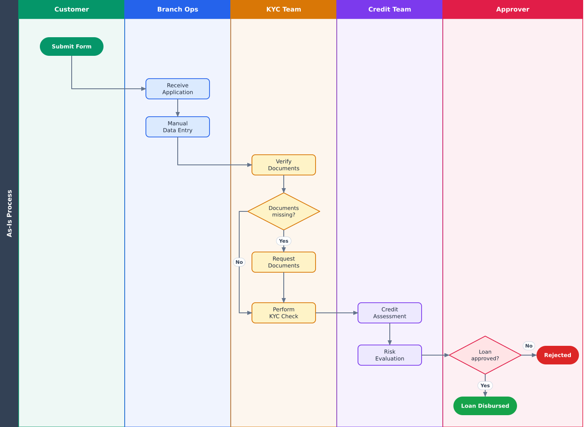
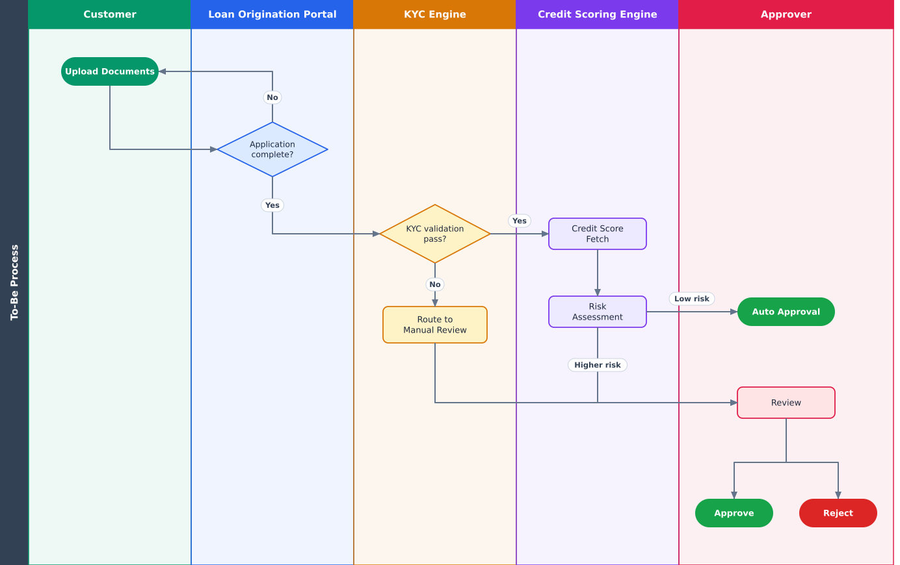

US-001
As a customer, I want to apply for a loan online so that I don't have to visit a branch.
- Application accessible online
- Mandatory validation enforced
- Confirmation generated
Digital Loan Origination | BFSI | Business Analyst
Reduced loan onboarding turnaround time from 7 days to under 8 hours by automating KYC verification, credit assessment, and approval workflows.
View Case Study Download BRDA retail bank relied heavily on manual processes for loan onboarding. Applications were submitted through branch offices and routed via email to KYC teams, credit analysts, and approvers.

The existing onboarding process required several manual handoffs and duplicate data entry across systems.
| Pain Point | Root Cause | Business Impact |
|---|---|---|
| Long Turnaround Time | Manual handoffs | Customer dissatisfaction |
| Duplicate Data Entry | Multiple systems | Errors and rework |
| KYC Delays | Manual verification | Approval delays |
| No Tracking | No workflow automation | Frequent customer calls |
| Missing Documents | Incomplete submissions | Process rework |

The future-state process leverages automated KYC, credit bureau integration, risk scoring, and workflow routing for faster loan approvals.
| ID | Requirement |
|---|---|
| FR-001 | Online Loan Application Portal |
| FR-002 | Document Upload and Validation |
| FR-003 | Automated KYC Verification |
| FR-004 | Credit Bureau Integration |
| FR-005 | Application Status Tracking |
As a customer, I want to apply for a loan online so that I don't have to visit a branch.
As a customer, I want to upload documents electronically.
As a customer, I want real-time application tracking.
As a KYC Officer, I want failed KYC cases routed for manual review.
As a Credit Analyst, I want bureau scores retrieved automatically.
As a KYC Officer, I want customer documents validated automatically so that I only handle exceptions.
As a Credit Analyst, I want applications risk-scored and low-risk ones auto-approved within policy limits so that straightforward loans are decided without manual effort.
As an Approver, I want high-risk applications routed to my queue with the KYC and credit summary so that I can approve or reject with full context.
As a Compliance Officer, I want every decision and status change logged so that the process is audit-ready.
| ID | Scenario | Expected Result | Requirement |
|---|---|---|---|
| UAT-01 | Loan application submitted | Application created and confirmation generated | FR-001 |
| UAT-02 | Missing mandatory document | Error message displayed and submission blocked | FR-002 |
| UAT-03 | KYC passed | Application moves to credit assessment | FR-003 |
| UAT-04 | KYC failed | Routed to manual review queue with failure reason visible | FR-006 |
| UAT-05 | Credit score requested | Score retrieved automatically and stored against the application | FR-004 |
| UAT-06 | Credit bureau unavailable | Error handled, application not lost, case flagged for retry | FR-004 |
| UAT-07 | Low-risk application | Auto-approved | FR-007 |
| UAT-08 | High-risk application | Routed to Approver queue with KYC and credit summary | FR-007, FR-008 |
| UAT-09 | Approver decision | Approve or reject recorded with reason; customer status updated | FR-008 |
| UAT-10 | Customer checks application status | Latest status and timeline displayed | FR-005 |
| UAT-11 | Audit review | Every decision and status change logged with user and timestamp | FR-009 |
| Requirement | User Story | Test Case(s) |
|---|---|---|
| FR-001 | US-001 | UAT-01 |
| FR-002 | US-002 | UAT-02 |
| FR-003 | US-006 | UAT-03 |
| FR-004 | US-005 | UAT-05, UAT-06 |
| FR-005 | US-003 | UAT-10 |
| FR-006 | US-004 | UAT-04 |
| FR-007 | US-007 | UAT-07, UAT-08 |
| FR-008 | US-008 | UAT-08, UAT-09 |
| FR-009 | US-009 | UAT-11 |
Illustrative case study. The figures below are targets set for the proposed solution, not measured results.
Turnaround time (straight-through applications)
Manual processing
Error and rework rate
Customer satisfaction
| KPI | Baseline (As-Is) | Target (To-Be) | Measurement |
|---|---|---|---|
| Turnaround time | 5–7 business days | Under 8 hours for straight-through applications | Submission-to-decision timestamps from workflow system logs |
| Manual processing | 80% of process steps need human handling | 20% | Share of steps with a manual touch per application, from the workflow report |
| Error and rework rate | 15% of applications | 2% | Applications needing data correction or document rework ÷ total applications |
| Customer satisfaction | 68% | 91% | Post-decision customer survey score |